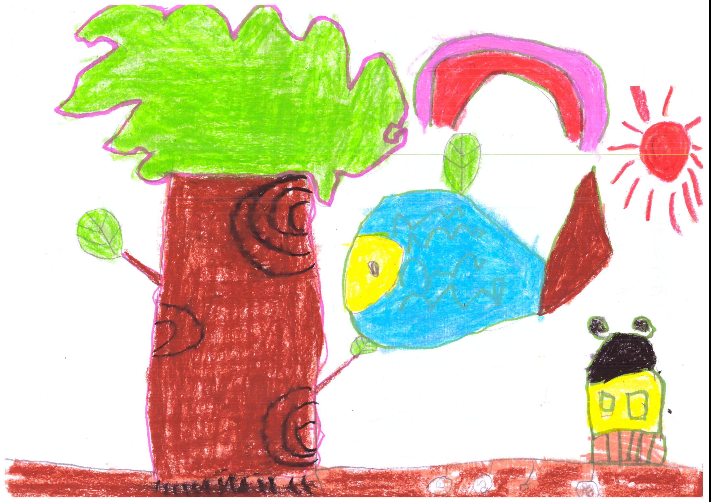

초등학교 1학년 학생들의 학교 적응 문제와 또래 관계는 아이 발달 및 교육 과정에서 중요한 이슈이다. 이 시기 아이들은 유아교육기관이나 가정에서의 생활로부터 학교라는 새로운 환경으로의 전환을 경험한다. 이러한 전환은 아이들에게 큰 도전이 될 수 있으며, 사회적, 정서적, 학습적 발달에 많은 영향을 미친다. 다음은 초등학교 1학년 시기에 겪을 수 있는 학교 적응 문제와 또래 관계에 대한 몇 가지 주요 측면과 지원 전략을 살펴보고자 한다.
1. 학교 적응 문제
1) 학습 환경의 변화
아이가 유아교육기관이나 가정에서의 비구조적인 학습 환경에서 구조화된 학교 환경으로 전환하는 것은 큰 변화이다. 이러한 변화에 적응하기 위한 시간 때문에 일부 아이는 이 변화로 인해 스트레스를 받을 수 있다.
2) 자기 조절 능력의 부족
학교에서는 집중력, 참을성, 그리고 순서를 따르는 것과 같은 자기 스스로 조절하는 능력이다. 이러한 기술이 미숙한 아이는 학습 및 또래관계에 어려움을 겪을 수 있다.
3) 분리 불안
아이는 가정에서 떨어져 있어야 하는 시간이 길어지면서 분리 불안을 경험할 수 있다. 유아교육기관에서 일일활동과 다르다는 점을 인지하지 못하고 학교에 대한 부정적인 감정을 유발할 수 있다.
4) 학교 생활에 대한 갈등
새로운 환경, 교사, 교실 등 학교 생활의 모든 것이 아이에게는 생소하게 느껴질 수 있다. 이로 인해 아이는 갈등과 불안감을 느끼고, 등교 거부나 학교에 대한 부정적인 태도로 이어질 수 있다.
5) 학습 활동의 어려움
초등학교에 입학하면서 아이는 유아교육기관에서 지내는 방법이 다르고, 규칙적이고 체계적인 학습 활동에 참여하게 된다. 읽기, 쓰기, 수학 등의 학문적 기술을 새롭게 배우는 과정에서 어려움을 겪는 아이는 학교수업 및 다양한 활동에 대한 부담감을 느낄 수 있다.
6) 규칙과 절차의 적응
학교는 유아교육기관이나 가정과는 다른 규칙 및 규율이 있다. 이러한 새로운 규칙과 절차에 적응하는 과정에서 아이는 어려움을 겪을 수 있다.

2. 또래 관계 문제
1) 사회적 기술의 발달
아이가 또래와 상호작용하는 방식은 사회적 발달에 중요하다. 일부 아이는 새로운 친구를 사귀는 데 어려움을 겪을 수 있으며, 이는 고립감이나 소외감으로 이어질 수 있다. 사회적 상호작용의 규칙과 기술을 배우는 것은 초등학교 1학년의 과제이다. 이러한 기술을 효과적으로 습득하지 못할 경우 또래 관계에서 소외되거나 갈등을 경험할 수 있다.
2) 또래 압력과 대처
또래 집단 내에서의 압력은 아이가 자신의 가치관이나 행동을 다른 사람들과 일치시키도록 강요할 수 있다. 이것은 아이가 자신의 정체성을 탐색하는 데 영향을 줄 수 있다. 아이가 또래 그룹의 기대와 압력에 직면할 때, 이에 대처하는 방법을 배우는 것이다. 부정적인 또래 압력에 저항할 수 있고, 건강한 또래 관계를 유지하는 능력은 아이의 정서적 안정성과 자신감에 기여한다.
3) 불안과 갈등
아이는 또래와의 관계에서 갈등이나 불안을 경험할 수 있다. 자기중심적이고 싸움이 잦다. 모둠활동이나 조별 경쟁을 시키는 것은 별 효과가 없다. 이는 아이가 학교 생활을 부정적으로 인식하는 원인이 될 수 있다.
4) 친구 사귀기
또래 관계는 아이의 사회적 발달에 있어 매우 중요한 부분이다. 학교는 새로운 친구를 만들고 사회적 기술을 발달시킬 수 있는 기회를 제공한다. 그러나 일부 아이는 또래 그룹에 적응하고 친구를 사귀는 데 어려움을 겪을 수 있다.
3. 지원 전략
1) 사회적 기술 개발
역할 놀이, 그룹 활동, 그리고 사회적 상황 시뮬레이션을 통해 아이의 사회적 기술을 개발할 수 있다.
2) 긍정적인 또래 관계 촉진
아이가 긍정적인 또래 관계를 형성하고 유지할 수 있도록 지원하는 것이다. 이는 아이가 학교 생활에 긍정적으로 참여하도록 동기를 부여한다.
3) 학교와 가정의 협력
교사와 부모가 협력하여 아이의 학교 적응을 지원하는 것이다. 이를 통해 아이가 학교 생활에서 겪는 어려움을 더 잘 이해하고 대응할 수 있다.
4) 정서적 지원 제공
아이가 자신의 감정을 표현하고 이해할 수 있도록 도와주는 것이다. 이는 아이가 불안이나 스트레스를 관리하는 데 도움이 된다. 아이의 학교 적응과 또래 관계 문제를 이해하고 해결하는 것은 아이가 학교 생활에서 성공적으로 발전하도록 하는 데 필수적이다. 상담가, 교육자, 그리고 부모가 아이를 지원하고 긍정적인 학습 환경을 조성하는 데 협력해야 한다.
2024.02.22 - [상담] - 초등1학년 - 아이의 마음과 행동은 우주인, 반은 인간
초등1학년 - 아이의 마음과 행동은 우주인, 반은 인간
초등학교 1학년 새로운 환경에서 만나는 새로운 친구, 교사, 공부방법 등에서 나타나는 아이들의 신체적, 인지적, 사회・정서적 아이들의 특성은 다음과 같다. 1. 신체적 발달 1) 신체적으로 발가
think-sis.co.kr